COLD OPEN — The bang, first
2sawaiting approval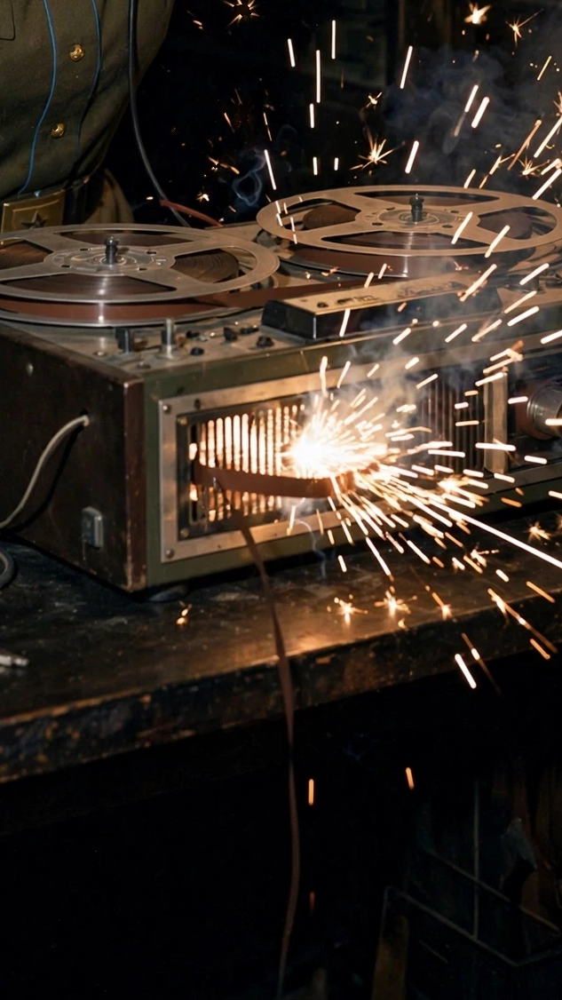
S01 — Title card
3sawaiting approval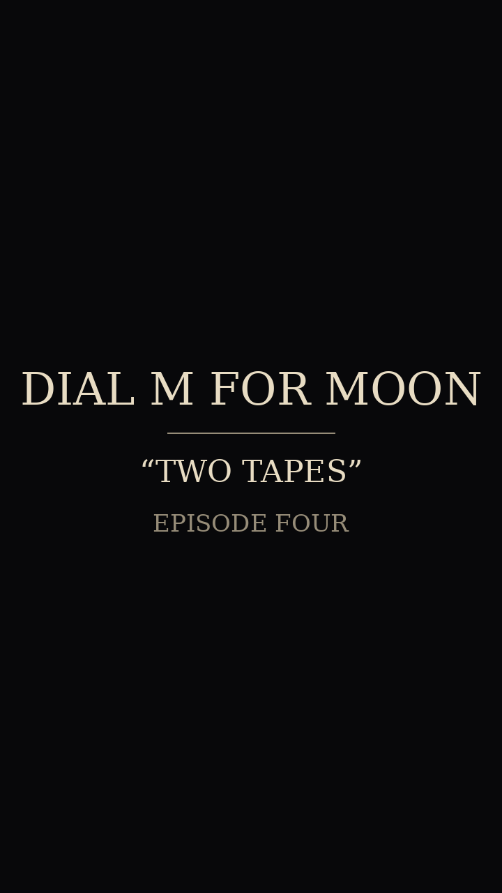
S02 — Coordinates
10skeyframe locked · v5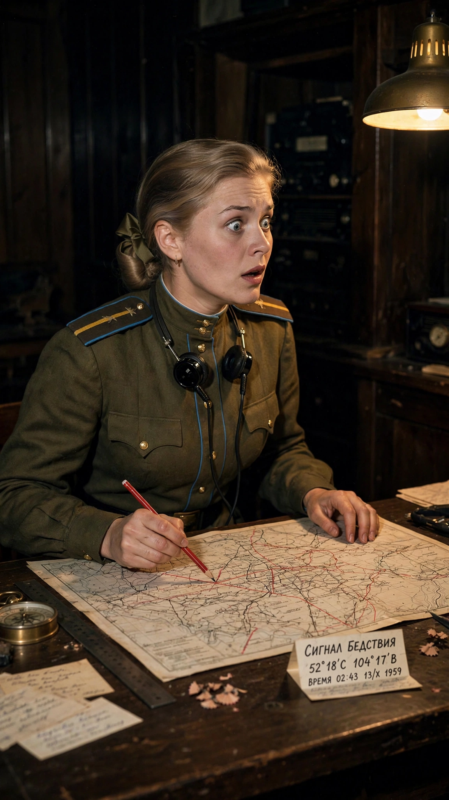
S03 — Erased man
10skeyframe locked · v3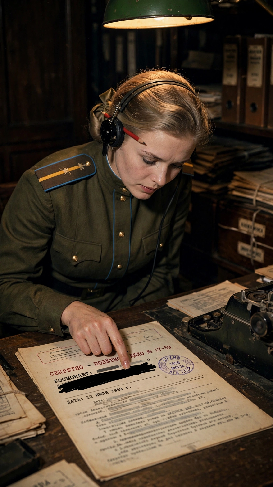
S04 — Decision
10skeyframe locked · v2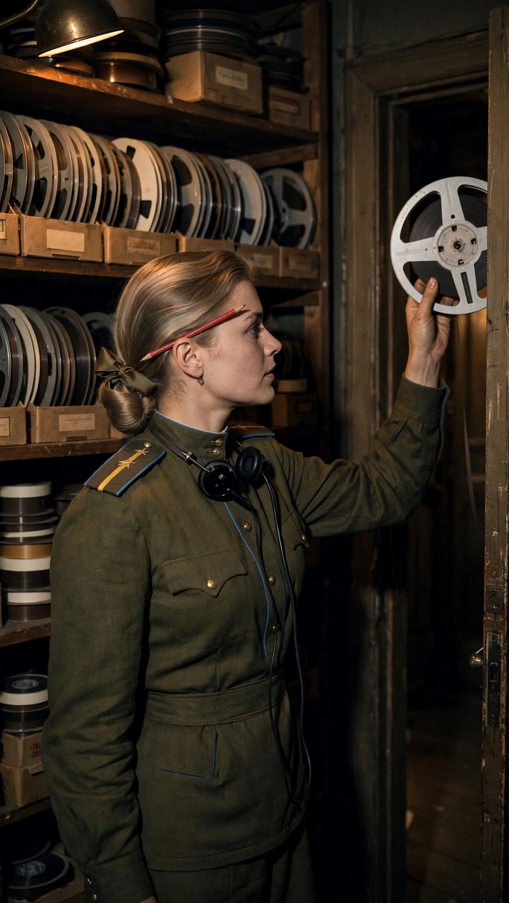
S05 — Crime
10skeyframe locked · v4-clean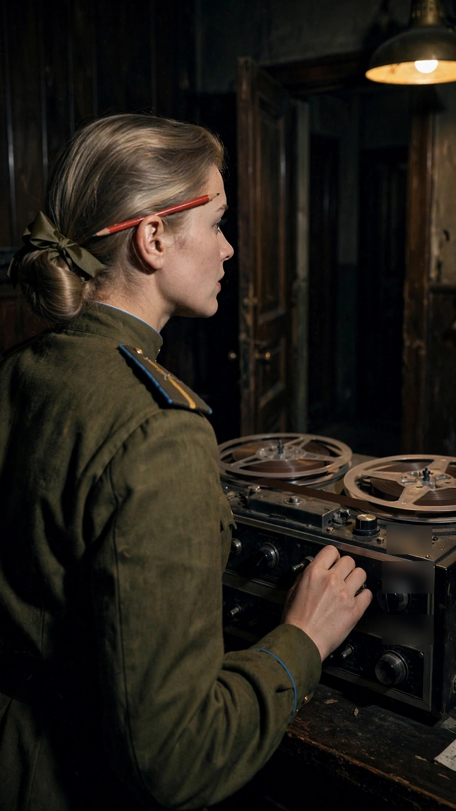
S06 — Cover-up
10skeyframe locked · v4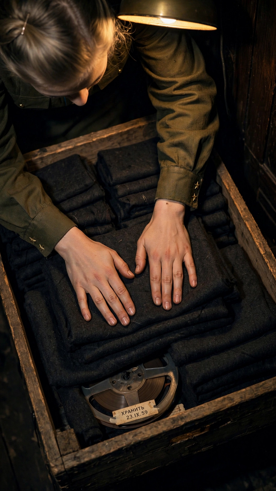
S07 — Stillness
10skeyframe locked · v1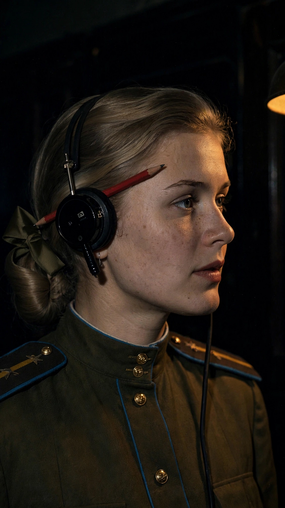
S08 — Spark-out
10skeyframe locked · v2-photoreal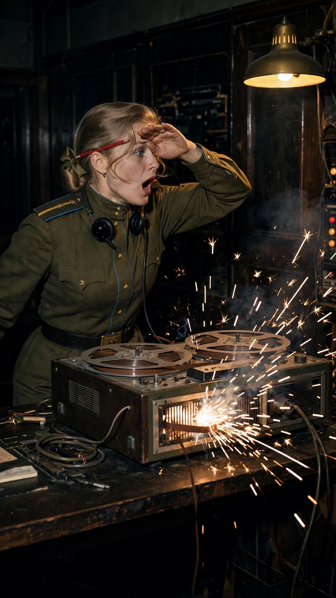
S09 — Empty crate
10skeyframe locked · v1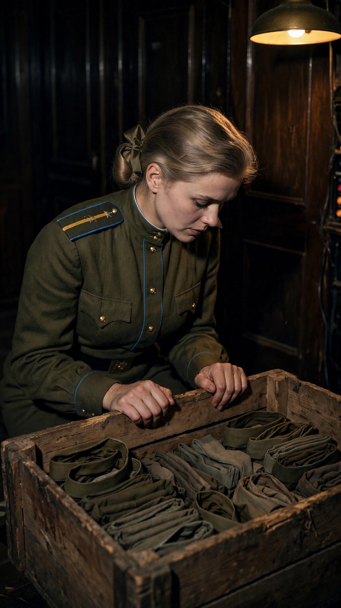
S10 — Warm headset
10skeyframe locked · v1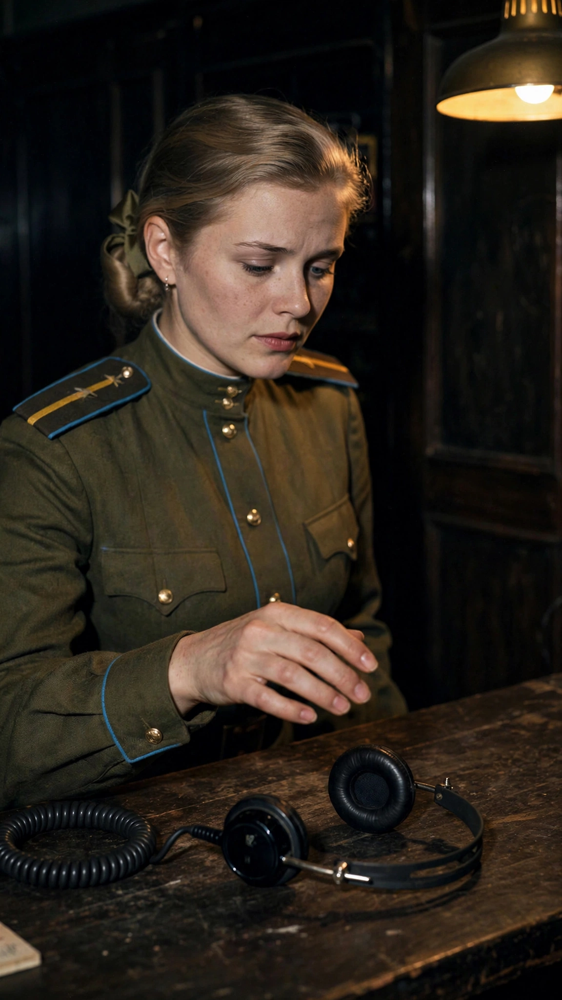
S11 — The door
12skeyframe locked · v1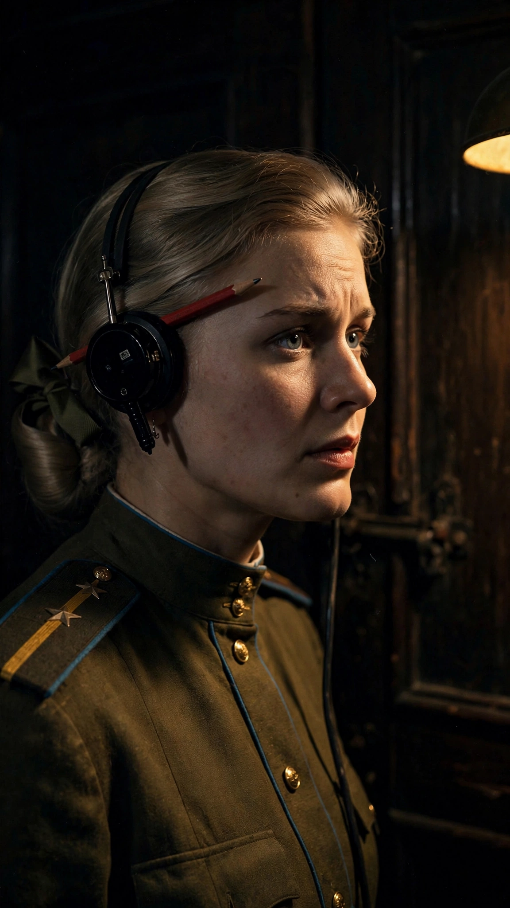